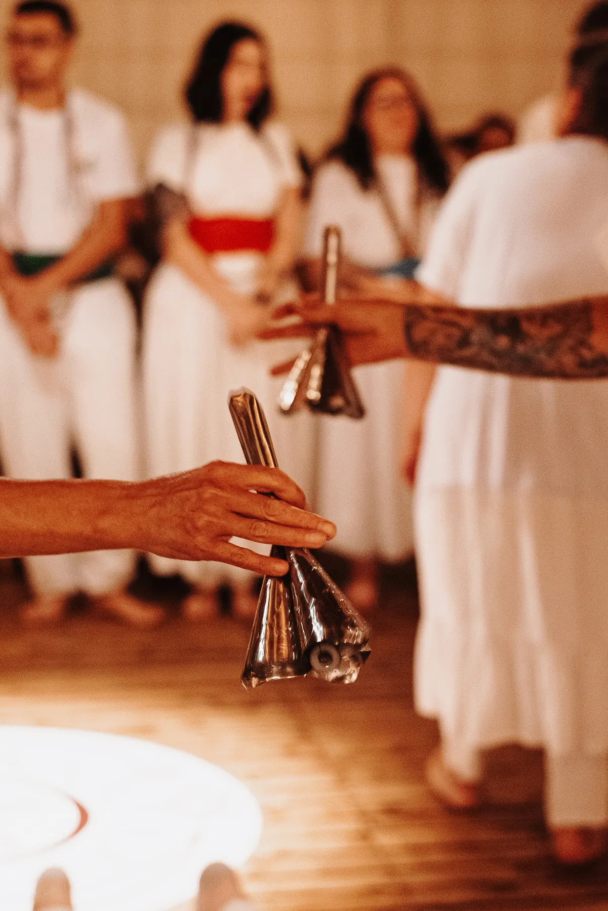

Toda segunda tem gira.
19h30Segunda-feira · gira aberta e gratuitaSenhas a partir das 19h. Av. Prefeito Maurício Fruet, 1230 · Jardim Botânico
As outras datas (festas, giras especiais, amacis, cursos e avisos) aparecem abaixo e são atualizadas pela própria casa na Google Agenda.
Não conseguiu ver a agenda? Abra direto no Google Agenda.
Te esperamos na segunda.
Gira aberta toda segunda-feira, às 19h30. Senhas a partir das 19h.